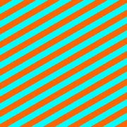
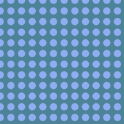
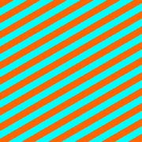
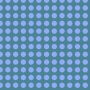

Why HoneyPotter?
Honeypots are adversarial non-semantic categories that look nothing like the labelled objects in your dataset. Drop them into validation splits, measure steal-rate, and benchmark calibration without collecting new data.
Pattern Families
Checkerboards, stripes, dots, blobs, solids, primitives, Perlin textures, and a dedicated moire family.
Color Control
Toggle grayscale, high-contrast BW, neon OOD palettes, or gamut-aware RGB sampling from your data.
Dataset Ready
Category names encode parameters and blur settings. Export labelmap.json, labels.txt, and metadata.csv for immediate integration.
Install
Stable release
pip install honeypotterFrom source
git clone https://github.com/benlten/HoneyPotter.git
cd HoneyPotter
pip install -e .[dev]The CLI is exposed as honeypotter once installed (see below for quick commands).
CLI Examples
OOD Sweep
honeypotter generate \
--out ./honeypots \
--n_categories 50 --per_class 100 \
--families checker,stripes,dots,blob,solid \
--color_mode ood --seed 0Gamut-Constrained
honeypotter generate \
--out ./in_dist \
--gamut ./imagenet_gamut.json \
--families checker,stripes,perlin \
--pattern_blur_sigma 2.0Programmatic
from honeypotter import GenerateDistractor, CategorySpec
spec = CategorySpec.default(families=["moire"], n_categories=10)
gen = GenerateDistractor(spec=spec, seed=7)
img, name = gen()ViT-Focused Moirés
HoneyPotter’s moiré family generates interference bands from dual-frequency sine waves. Intensities can be snapped to an N×N grid (default 16×16) so each vision transformer patch sees a coherent signal.
- Randomise or enumerate hues with
--moire_hues - Control interference with
--moire_frequency*and--moire_angle* - Adjust contrast via
--moire_saturation/valueranges


 




Texture Banks Without Labels
Need synthetic backgrounds or augmentation tiles? Add --patterns_only to skip class directories, label maps, and metadata. Files are emitted as pattern_000123.png so you can drop them straight into your pipeline.
honeypotter generate --out ./texture_bank \
--families moire,stripes --patterns_only \
--n_categories 24 --per_class 4